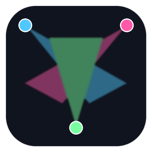
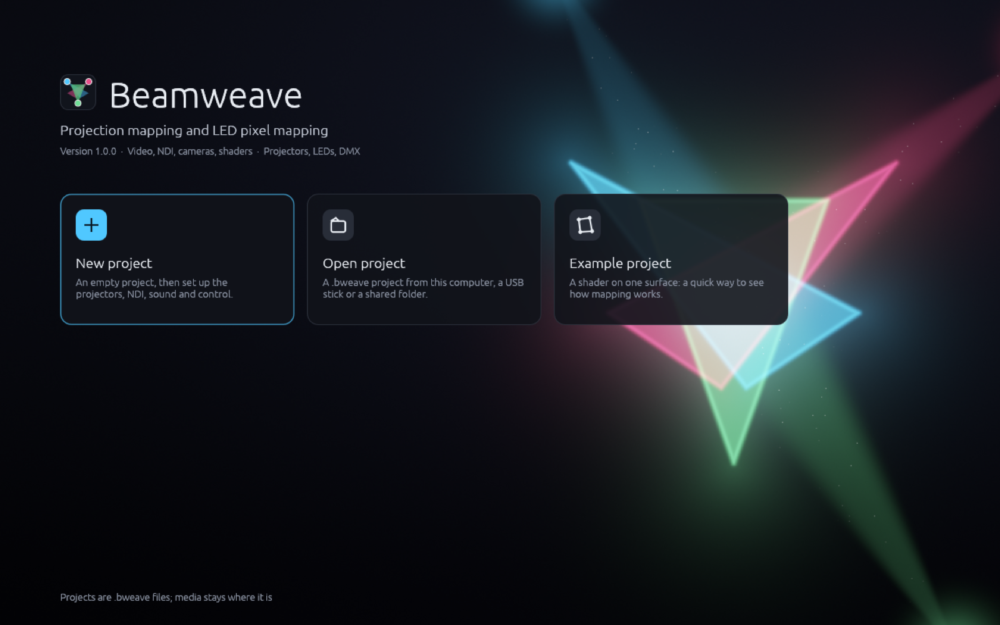
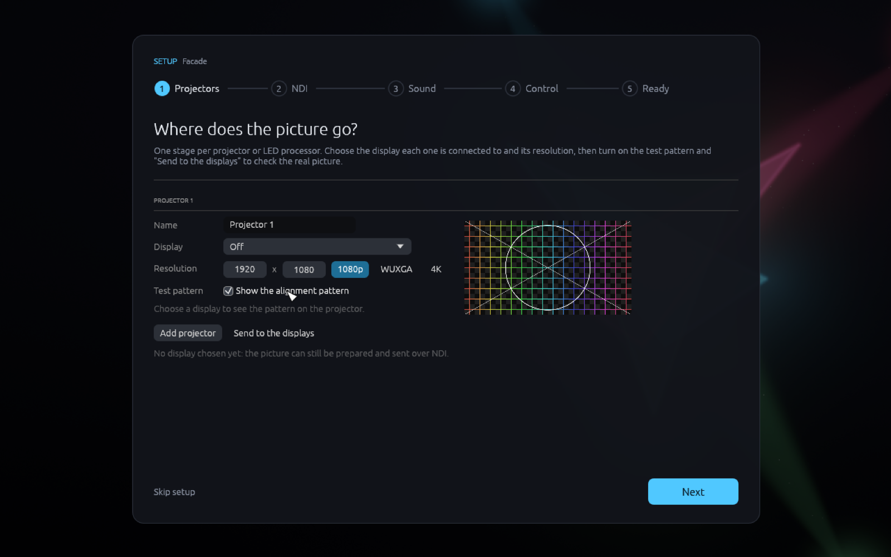

Showtime Suite
Showtime Suite
Beamweave
Map video onto any surface, line up several projectors in one 3D room, and drive LED strips from the same picture.
For macOS and Windows. Easiest with Showtime Suite, which also keeps it up to date.


What it does
Surfaces
Quads with correct perspective, triangles, ellipses, grid warps up to 12×12 and polygon masks.
Sources
Video files with sound, cameras and capture cards, images, NDI inputs, live-editable shaders and colours.
Several projectors
Each with its own resolution, corner correction and soft edges for overlaps.
3D room
Projectors and surfaces share one room, so several projectors line up on the same place.
LED pixel mapping
Strips and matrices sample the picture and go out as Art-Net or sACN.
NDI out
Any stage can be published as an NDI source on the network.
Control
MIDI learn, OSC, keyboard and scenes with fades; undo, autosave and a manual.